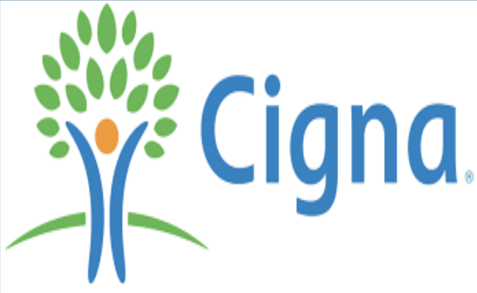
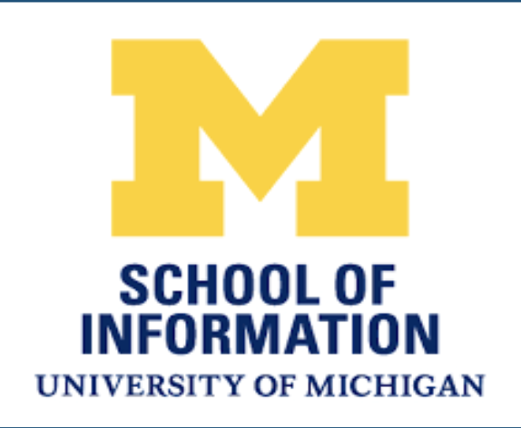

Professional Experience
Cigna
Data Engineer TECDP Summer Intern, Bloomfield CT
Technology Early Career Development Program aka TECDP is Cigna’s most critical graduate hiring program where Cigna trains and grooms future full time technical associates right from sophomore years.
Team: Performance Data Environment Engineering team
Project Name: Data Audit and Catalogs, fully funded business driven project
Project Team Members: PM, PO, Scrum Master, Program tech lead, VS Analyst, Project tech lead (myself), developers
Project Objective: To design and build a single page full stack application that will allow customer value stream to make sure application test data integrity across databases is intact & generate notification in case of unauthorized changes.
Roles and Responsibilities:
- Business Analysis : understanding customer value stream, talking to the colleagues on the customer end and partner/collaborate with team on design and development
- Architecture: Exploring different software tools to build the most efficient solutions, to streamline data flow process and making sure everyone on the team is on the same page regarding the solution that we are building
- Design: Data Modeling and Cataloging, design a Data Model highlighting unauthorized changes catalog
- Develop: Automating and querying data catalogs for PDEE team, to have a successful algorithm that captures unauthorized changes made by any consumers. Walk-through provided in demo meetings and standups
- Testing and Rollout: Repeated testing to make sure no unauthorized changes are missed, writing out and planning all possible test cases for the given test data element requested for
Skills:
Technical: Python, Oracle t-SQL, Oracle stored procedure, Tableau, Excel
Execution skill: Working in SAFe agile, Data analysis and engineering, global team interaction, presentation
Project Deliverables:
A single page full stack application that allows customer value stream to test data integrity and generate notification.
As a Co-op, I am currently working on enhancing scalability of the application.
Skills developed or learned during Internship:
- Working in SAFe agile framework
- Managing vision, scope & purpose, customer focus
- Perseverance, organizing, priority setting
- Organization agility, learning and applying quickly
- Dealing with ambiguity, problem solving
- Conflict management, courage, mentoring
Learnings:
“Never be in a wait state”, “leading SAFe 4.6 Agilist” certification
Supervisor: Chakravarty Metturdharma, Senior Director, Cigna
Email: chakravarthy.metturdharma@cigna.com
Scrum master and Business delivery lead, Bloomfield CT
Team: Cigna TECDP Summer Interns team
Project Name: Aging youth engagement, a TECDP Intern innovation assignment
Project Team Members: : PO, SM and Business delivery lead (myself), BA, two tech leads, and six developers
Project Objective: To create a web application to enhance the modifiable health behaviors for 65 & above populations under Medicare through a technology solution that will drive down high mortality rate in the country.
Roles and Responsibilities:
- Business Analysis, R&D, competitive intelligence, market insight.
- User feedback, user testing.
- Sprint planning, daily standups etc.
- Sponsor and stakeholder interaction, status reporting.
- Present to CIO , business and IT stakeholders in presence of the entire Cigna
Skills:
Technical: Tableau, Excel
Execution skill: requirement gathering, analysis, team collaboration with interns as peers, presentation to senior management
Project Deliverables:
To create a web application called “JOY” which allowed Cigna’s 65 and above customers to gain an online portal, sign up for a buddy program which would prevent them from being lonely and modify their health behaviors and better their life style along with a pill notification reminder so that they take their medicines regularly.
Skills developed or learned during Internship:
- Communication with technical, business and other nontechnical resources
- Conflict management
Learnings:
Conflict resolution coming up during work allocation and distribution
Supervisor: Allison S Eastwood
Email: Allison.eastwood@cigna.com
Data & Visualization Intern, Bloomfield CT
Team: Competitive Intelligence and Market Insight Division, Cigna
Project Team – Product Manager, Project Manager, Data Viz Manager, Intern (Masters), myself
Projects: 2 projects were delivered with end to end responsibilities. Competitive Intelligence Dashboard project and Medicare Dashboard project showing competitor intelligence and insights
Roles and Responsibilities:
- Visualization Project execution with end to end responsibilities
- Data Analysis from various data sources - CMS, an open Govt data source on Healthcare products, rating, pricing, geo code mapping, competitor landscape and historical data.
- Understanding data type, data dictionary and its relevance for the reports
- Prepare draft dashboard and reports
- Review with Market Insight specialist
- Refine and Review with Product Manager
- Prepare Final version
- Present to business stakeholders
Skills:
Technical -Tableau 10.2, Excel 2013, VB 2013
Project execution skill: Data analysis, Requirements gathering, Presentation
Project Deliverables:
- Competitive Intelligence Dashboard- 6 dashboards, 20 sheets showing pricing, product, geo expansion footprint, core and non-core benefit. Duration 7 weeks.
- Medicare dashboard: 3 dashboard with 14 sheets with Pie charts and snapshot view for Medicaid and Medicare support enrollees. Duration – 3 weeks
- Both tools were made as an automated solution as the data set could be replaced at any time and the whole dashboard will transform quantitatively with regards to the new data provided.
Skills developed or learned during Internship:
- Exposure to real project execution in a corporate setting having remote team members
- Communication with non-technical business stakeholders
- Collaborating with team, understood the fine difference between professional and casual approach
- Technical skills – VBA, Excel and Tableau shortcuts, Tableau- calculated field coding, union, blending large amount of data in table
- Presenting to various stakeholders and getting engaged in meaningful conversations.
- Networking with 2018 Cigna interns of various teams like Tech DP, etc.
Learnings:
Working in a team setting with varied knowledge and experience level.
Professional way of presenting using right verbiage, phrases, messaging while presenting to Business stakeholders.
Supervisor: Allison Eastwood (HR), Michael Zehrer (Project Manager)
Email: Allison.eastwood@cigna.com ; Michael.Zehrer@cigna.com
University of Michigan
First Year Experience (FYE) Student Coordinator
Job Context: UM Student Life introduced this new job in 2018 to mentor and guide UM Freshmen to have an outstanding 1st year experience as part of FYE Program aspirations - Journey, Discover, Connect, and Thrive. Around 100+ students from various years applied for 10 positions. After rounds of interview, I was selected as the 2nd sophomore student for this job. All of us went through a training program before starting our work.
Job Profile:The FYE Student Coordinator team is primarily involved in the planning and execution of First-year experience programming and communications under the guidance of a Program Manager. The team is mandated to develop and deliver programs to create welcoming and supportive environments, provide resources for student success and transition, and encourage involvement across campus, all centered on FYE’s program aspirations. This group of student leaders met on Mondays from 6:00pm-8:00pm (weekly till Oct, then biweekly till the end) throughout the school year for staff meetings and individually with the FYE Program Manager.
Responsibilities:
- First Year Experience Programming and Support (55% of the activities):
- Develop, coordinate active and passive educational programming for freshmen focused on living and learning at U-M, academic and involvement questions, health and safety, academic resources, decisionmaking strategies, and above all transitioning to U-M
- Collaborate to deliver workshops that enhance the UM experience & assist in program promotion
- Collaborate with Student Life partners under guidance of Program Manager to invite and arrange for campus partners to provide support in the residential communities.
- Incorporate assessment into the design, delivery, evaluation of FYE programs and Services
- First Year Experience Communication and Marketing (30% of the activities):
- Interview/record students to develop FYE Stories video series
- Develop digital postings; create & update content for FYE website
- Connect with first year students for feedback, ideas, and future planning
- Administrative Tasks (15% of the activities):
- Attend bi-weekly staff meetings on Monday nights from 6:00-8:00pm
- Develop a programming and advising schedule before each semester
- Organize events, material, and communication around first-year milestones
Activities:
- Build relationships with first year residents
- Be proactive in helping direct students to opportunities and resources on campus.
- Serve as a peer resource that freshmen feel comfortable approaching with questions
- Be available for one on one student support/advising
- Serve as a role model and mentor for first year students
- Stay up to date on UM campus resources and events
- Participate in the FYE Student Coordinator selection process & other duties as assigned by the FYE PM
Skills acquired:
Looking at the profile and expectations of the job, I got good exposure in acquiring skills like networking, program execution, team building, people skills, leadership, collaboration, mentoring and multi-tasking.
Learnings or challenges:
- Time management as I spent 20 hours a week in the job while simultaneously taking care of my studies and assignments for the entire year
- Discovering campus resources of a large university like UM required lot of planning and effort
Supervisor name: Dayna Asante-Appiah Email: daappiah@umich.edu